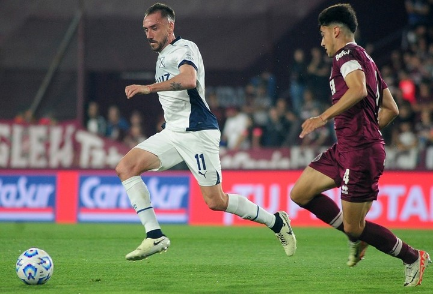
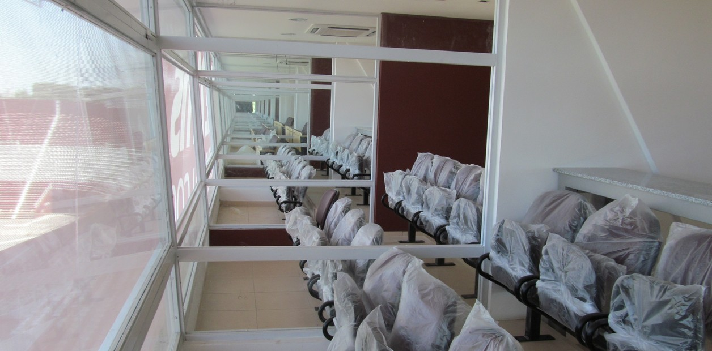

Un Partido que Hace Historia
Enfrentar a Independiente siempre es un desafío y una oportunidad para demostrar nuestra fortaleza. Este partido promete ser una gran batalla en el campo y una muestra de pasión en las gradas.
Experiencia del Partido
- Concurso de banderas y pancartas
- Actividades de animación en las gradas
- Zona VIP para socios
- Show de fuegos artificiales al finalizar el partido
Actividades Previas
Antes del partido, los hinchas podrán disfrutar de varias actividades:
- Stands de venta de artículos oficiales
- Zona de comida y bebida
- Mini torneos de fútbol para niños
Zona Exclusiva para Socios
Los socios del club tendrán acceso a una zona especial donde podrán disfrutar de beneficios exclusivos como asientos preferenciales, regalos, y descuentos en la tienda oficial del estadio.
Recomendaciones para Asistir
- Llega con suficiente anticipación para evitar largas filas.
- Lleva tu carnet de socio y entrada impresa.
- Usa ropa cómoda y sigue las indicaciones del personal del evento.
¡No te pierdas este partido crucial y ven a alentar a Lanús en nuestra casa! Vive la pasión granate en un evento inolvidable.